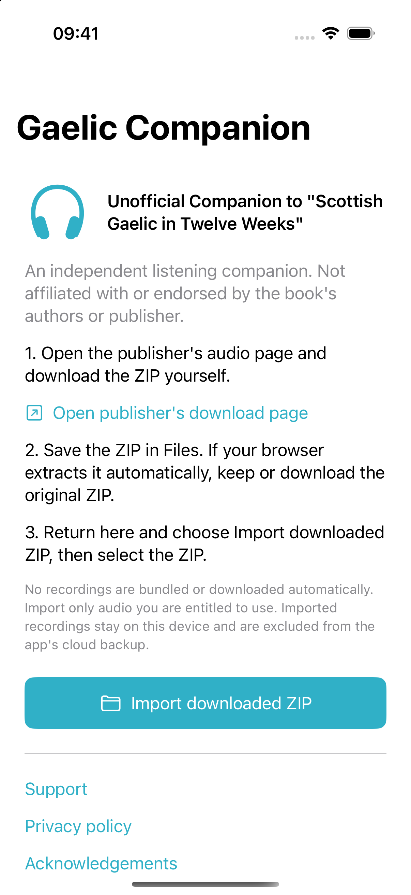

An independent listening companion to “Scottish Gaelic in Twelve Weeks” for iPhone and iPad.
Not yet on the App Store · Planned as a free app
See features SupportBring audio you are entitled to use. Keep your recordings and progress on your device. Not affiliated with or endorsed by the book's authors or publisher.
Browse imported recordings by lesson and section, with appendices and reading practice.
Import the original downloaded ZIP from Files. No publisher recordings are bundled.
Play imported audio without an internet connection, including in the background.
Seek within a recording, jump five seconds, or use iOS lock-screen playback controls.
Recordings are marked listened when they finish. You can also mark progress manually.
Optionally start at marked intro ends, while keeping the option to seek back.
The current iPhone onboarding screen. No publisher recordings are included.
